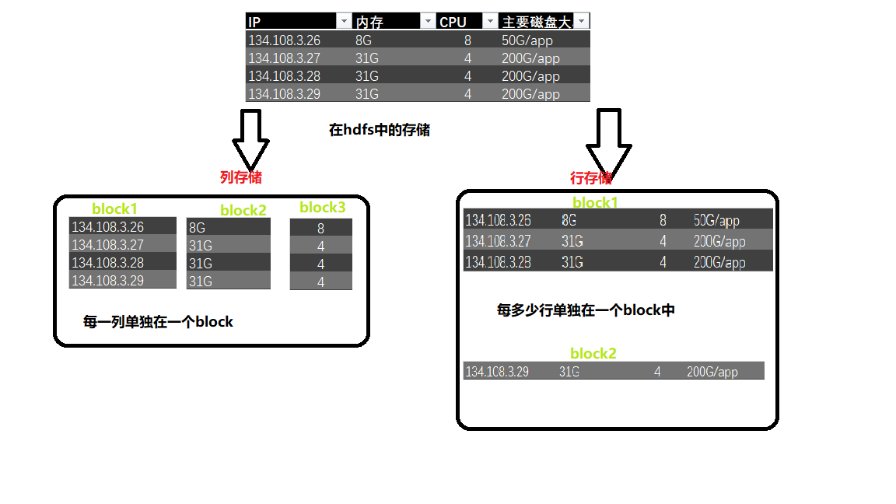

行存储和列存储在hdfs中的区别

hive中的file_format
可以使用set hive.default.fileformat来查看和设置格式
set hive.default.fileformat
默认是TextFile
file_format:【查看hive官方文档】
: SEQUENCEFILE 【文件比原始文本文件还要大；不适用】
| TEXTFILE – (Default, depending on hive.default.fileformat configuration)
| RCFILE – (Note: Available in Hive 0.6.0 and later)【性能也比较低；减少百分之10空间】
| ORC – (Note: Available in Hive 0.11.0 and later)
| PARQUET – (Note: Available in Hive 0.13.0 and later)
准备测试数据
创建表
1 | create table page_views( |
加载数据
load data inpath ‘/input/hive_test/page_views.dat’ into table page_views;
插入知识点：hive的四种导入方式
本地导入：load data local inpath ‘本地路径’ into table 表名;
hdfs导入：load data inpath ‘hdfs路径’ into table 表名;
直接导入：[表已存在]从别的表中查询出相应的数据并导入到Hive表中
创建导入：【表未存在】在创建表的时候通过从别的表中查询出相应的记录并插入到所创建的表中
SET hive.exec.compress.output=true;【设置输出压缩为true】
set mapreduce.output.fileoutputformat.compress.codec=org.apache.hadoop.io.compress.Bzip2Codec;【map的xml已经配置；这里无需指定】
create table page_views_bzip2
as select * from page_views;
即可完成page_views_bzip2表的创建；同时查看此表的文件是bzip压缩格式
源文件
下列语句是测试hive的file_format
create table page_views_sequencefile(
track_time string,
url string,
session_id string,
referer string,
ip string,
end_user_id string,
city_id string
) row format delimited fields terminated by ‘\t’
stored as sequencefile
不能用load直接导入数据
需要select * from其他的表数据导入本表
sequencefile一般不会用；因为它比原始数据还要大
orc格式 默认ZLIB压缩
create table page_views_orc(
track_time string,
url string,
session_id string,
referer string,
ip string,
end_user_id string,
city_id string
) row format delimited fields terminated by ‘\t’
stored as orc【指定格式 比如sequencefile，orc等等】 ;
orc不采用压缩
hive orc官网：https://cwiki.apache.org/confluence/display/Hive/LanguageManual+ORC
【默认情况下“orc.compress”=”ZLIB”】
create table page_views_orc_none
stored as orc tblproperties (“orc.compress”=”NONE”) 【不采用默认压缩】
as select * from page_views;
parquet不使用压缩
官网：https://github.com/apache/parquet-mr
create table page_views_parquet
stored as parquet
as select * from page_views;
parquet使用gzip压缩
set parquet.compression=gzip;
create table page_views_parquet_gzip
stored as parquet
as select * from page_views;